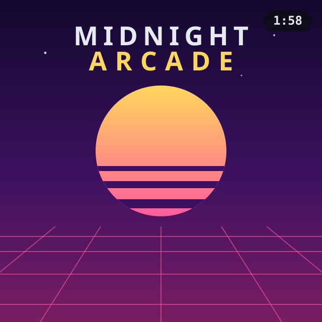

⚡ Winamp
The plugin adds a cover window that docks right beside Winamp and follows whichever 24seven.fm station you're tuned to. Start the stream — the artwork is just there, track after track.
Installer ({{SIZE_WINAMP_EXE}}) Manual .zip ({{SIZE_WINAMP_ZIP}})